Party Map Generator, round r8b
Every generated map as its own picture, the same code that runs in the game. Click a map to see it full screen (fit, 1:1, 2x, 3x). Green box = start plank, yellow box = goal with its red flag, white dots = the route the generator planned, magenta dots = tight spots on it. Caption: seed, map name, layout and route direction (R right, L left, U up, C centre, F flat), assisted hops, wire cells, pieces.
How to answer: name theme and seed, for example cave s1 or forest s3 s5 s8, and say what is wrong or what you like. Whole-theme verdicts count too.
What changed since 1.1.0
- 7layouts instead of one tunnel: archipelago, tree or crystal lattice, street and sky, ribbon hall, chimney, framed hall, and the 1.0.0 carved cave with its dead rooms filled
- 4-6layouts per theme across the 8 seeds; no two maps of a theme share layout and direction, and no two cavities look alike by the corpus threshold
- 0wire on route surfaces and 0 shafts wired on both walls, on all 72 maps. Wire is lethal in the route check now, so the impossible-wall case is gone
- 0.47solid share (1.1.0: 0.79, real maps: 0.57). Open air is back, now too much of it
- 3/4/5assisted hops on Medium / Normal in 26 / 25 / 13 maps; difficulty setting unchanged
- 124 msper map, deterministic, same seed gives the same map
Forest
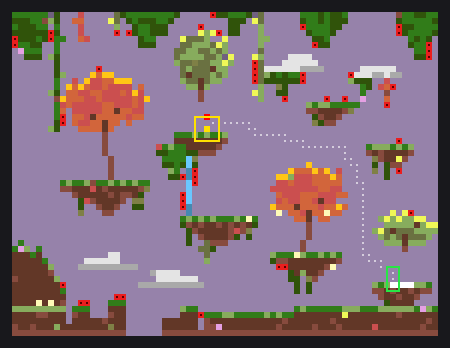
Archipelago LU · hops 4 · wire 49 · pcs 670
Forest / Medium / Normal
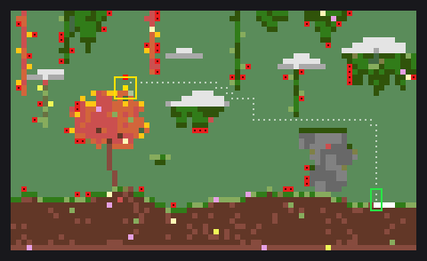
Street LU · hops 3 · wire 52 · pcs 576
Forest / Medium / Normal
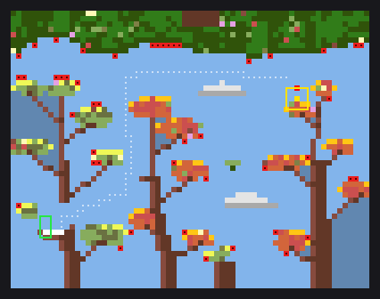
Lattice RRU · hops 5 · wire 46 · pcs 578
Forest / Medium / Normal
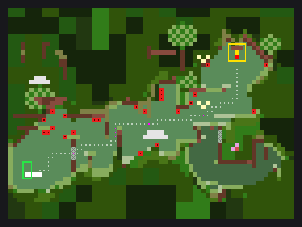
Carved RRUU · hops 3 · wire 23 · pcs 692
Forest / Medium / Normal
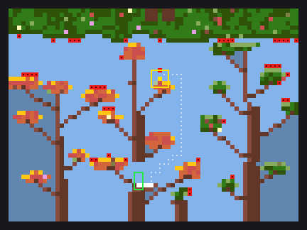
Lattice CU · hops 3 · wire 45 · pcs 591
Forest / Medium / Normal
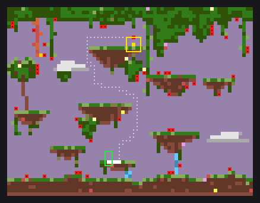
Archipelago CUU · hops 3 · wire 47 · pcs 618
Forest / Medium / Normal
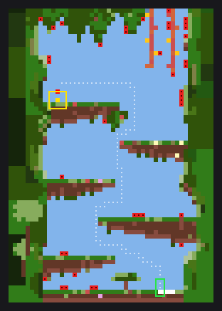
Chimney LUU · hops 4 · wire 39 · pcs 565
Forest / Medium / Normal
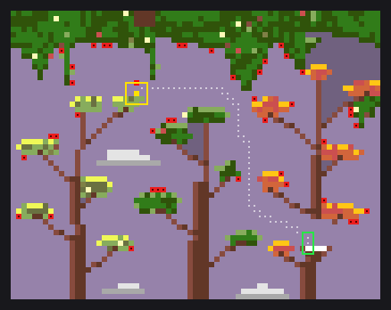
Lattice LU · hops 3 · wire 42 · pcs 613
Forest / Medium / Normal
Contact sheet with metrics (sheet-forest.png)
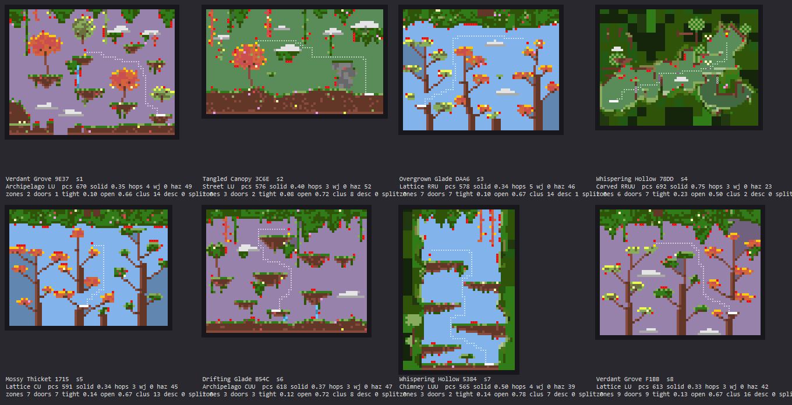
- Trees with branches and trunks you can climb are there (s3 s5 s8), but the leaf pads are tiny and the three lattice maps look alike: three trunks and sky.
- s1 s6 archipelago: islands with autumn trees read well; too much empty sky between them.
- s4 is the old 1.0.0 blob cave.
Cave
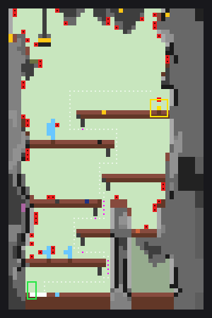
Chimney RRUU · hops 5 · wire 46 · pcs 422
Cave / Medium / Normal
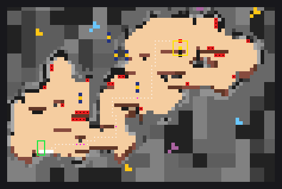
Carved RRUU · hops 4 · wire 29 · pcs 647
Cave / Medium / Normal
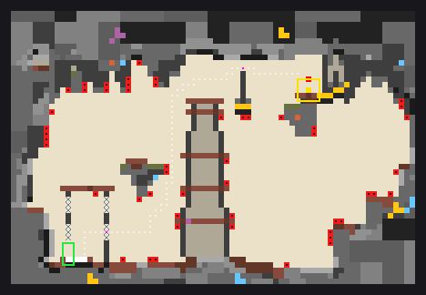
Framed RRUU · hops 3 · wire 50 · pcs 543
Cave / Medium / Normal
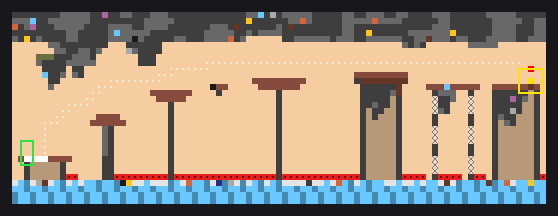
Ribbon RRU · hops 5 · wire 52 · pcs 458
Cave / Medium / Normal
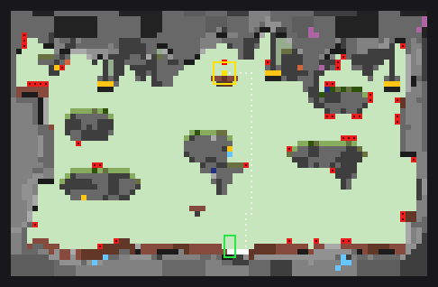
Framed CUU · hops 4 · wire 43 · pcs 650
Cave / Medium / Normal
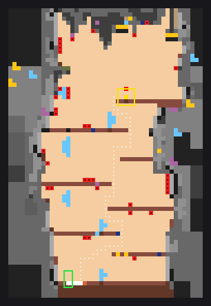
Chimney RUU · hops 5 · wire 37 · pcs 467
Cave / Medium / Normal
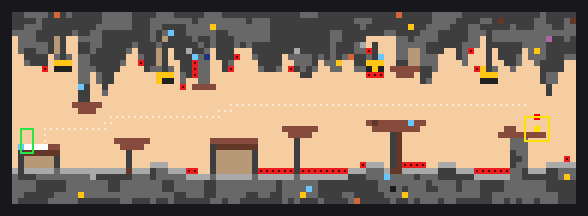
Ribbon RRF · hops 4 · wire 43 · pcs 535
Cave / Medium / Normal
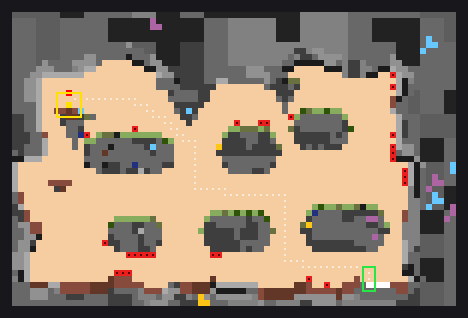
Framed LUU · hops 4 · wire 28 · pcs 656
Cave / Medium / Normal
Contact sheet with metrics (sheet-cave.png)
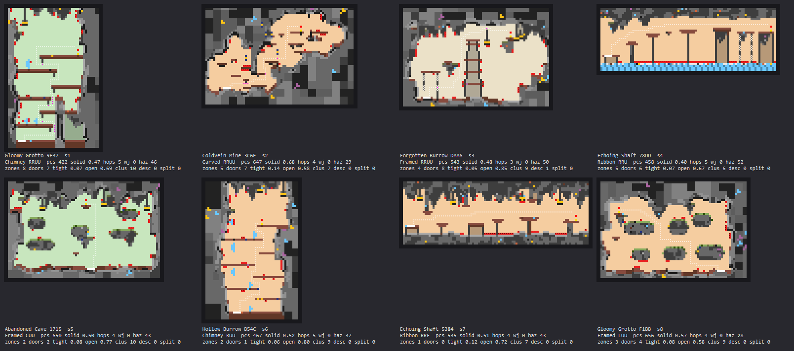
- Weak mine identity. The chimneys (s1 s6) are plain plank shelves in a shaft, the ribbon halls (s4 s7) are plain posts with slabs. The only mine-shaft tower is in s3.
- Framed halls (s5 s8) with floating rock clumps are the closest to a real cave map.
- The pale green and beige air tints look wrong for a cave.
Lava
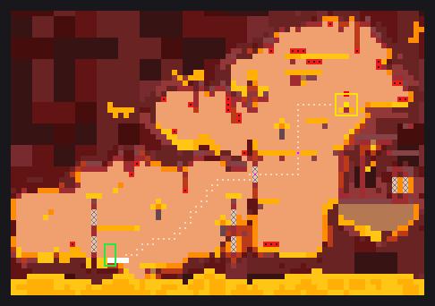
Carved RRU · hops 4 · wire 31 · pcs 867
Lava / Medium / Normal
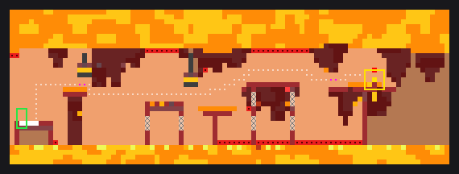
Ribbon RRF · hops 4 · wire 52 · pcs 527
Lava / Medium / Normal
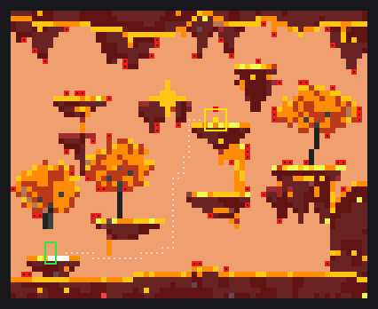
Archipelago RU · hops 4 · wire 70 · pcs 729
Lava / Medium / Normal
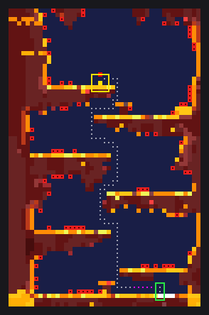
Chimney LUU · hops 5 · wire 77 · pcs 524
Lava / Medium / Normal
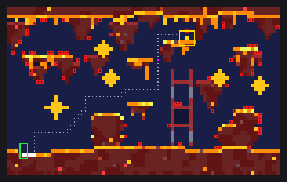
Street RRUU · hops 4 · wire 70 · pcs 610
Lava / Medium / Normal
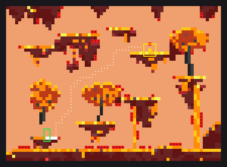
Archipelago RRUU · hops 4 · wire 80 · pcs 603
Lava / Medium / Normal
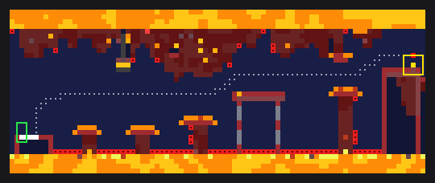
Ribbon RRU · hops 3 · wire 71 · pcs 483
Lava / Medium / Normal
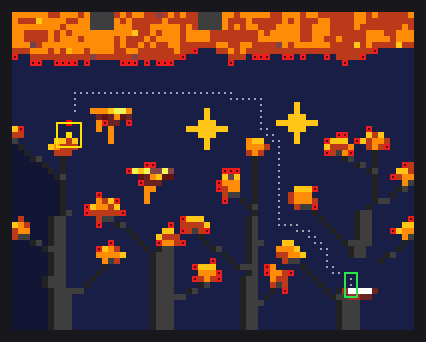
Lattice LU · hops 3 · wire 78 · pcs 497
Lava / Medium / Normal
Contact sheet with metrics (sheet-lava.png)
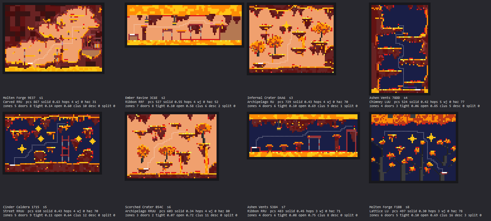
- Best sheet of the round: ribbon halls over lava (s2 s7), islands with fire trees (s3 s6), a crystal lattice (s8), a street with stars (s5).
- s4 chimney has long empty lanes between shelves. s1 is the blob cave.
Industrial
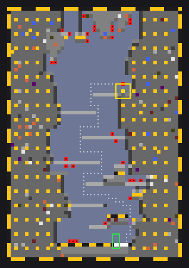
Chimney CUU · hops 4 · wire 28 · pcs 907
Industrial / Medium / Normal
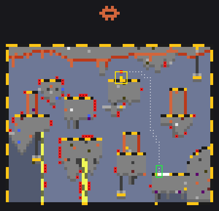
Archipelago LUU · hops 5 · wire 66 · pcs 575
Industrial / Medium / Normal
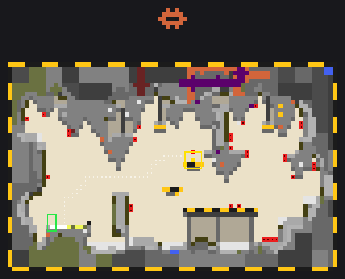
Framed RU · hops 3 · wire 29 · pcs 774
Industrial / Medium / Normal
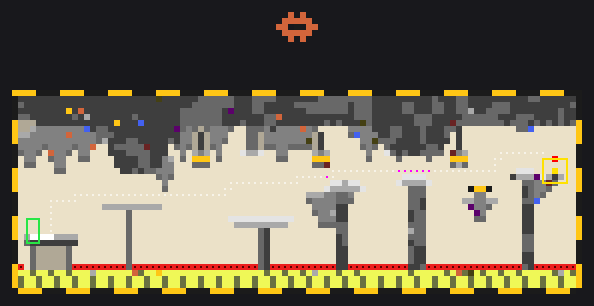
Ribbon RRU · hops 5 · wire 75 · pcs 622
Industrial / Medium / Normal
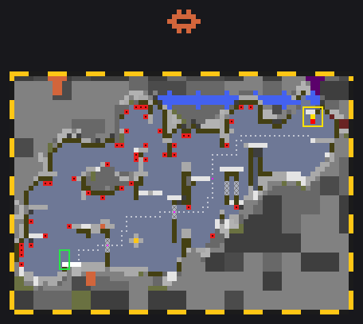
Carved RRUU · hops 4 · wire 41 · pcs 698
Industrial / Medium / Normal
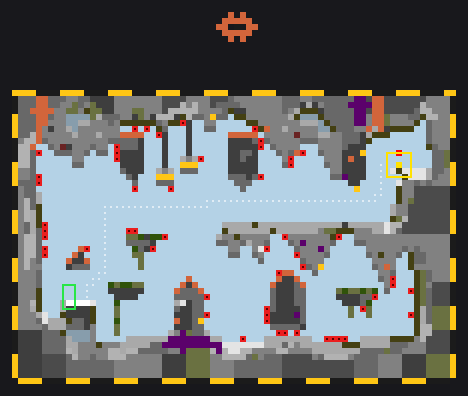
Framed RRU · hops 3 · wire 55 · pcs 751
Industrial / Medium / Normal
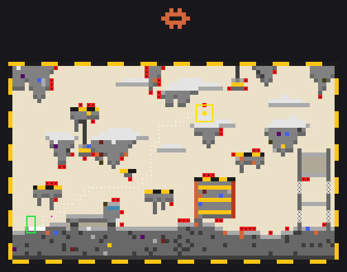
Street RRUU · hops 4 · wire 60 · pcs 619
Industrial / Medium / Normal
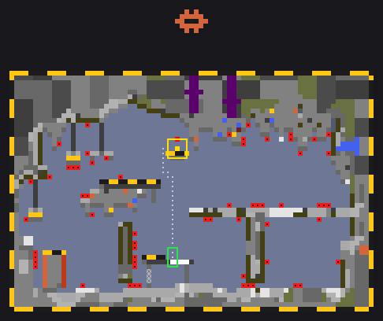
Framed CU · hops 3 · wire 61 · pcs 690
Industrial / Medium / Normal
Contact sheet with metrics (sheet-industrial.png)
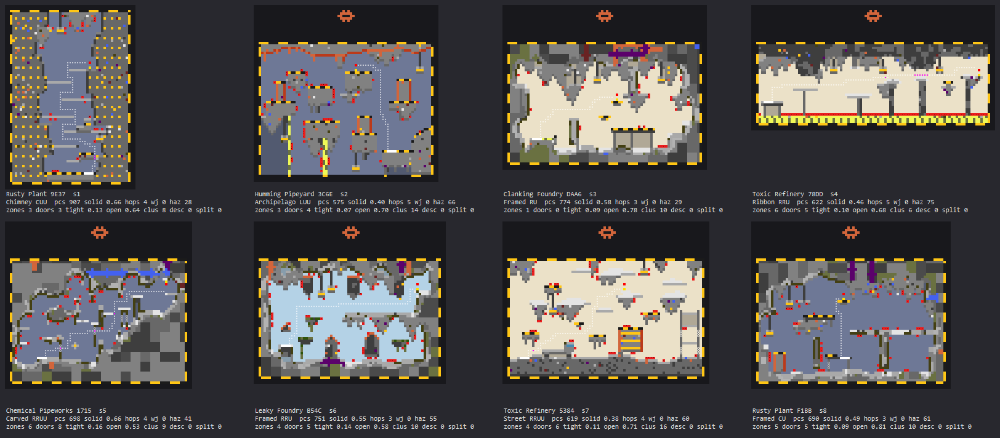
- No pipes. The pipe lattice failed the agent's own look test and is switched off, so the theme has no pipe yard yet.
- s1 chimney: the dotted facade walls look like noise. s5 is a blob cave with a grid frame.
- Framed halls (s3 s6 s8) have tanks and catwalks but read busy; the ribbon tables in s4 are plain.
City
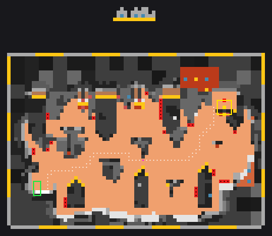
Framed RRU · hops 3 · wire 29 · pcs 721
City / Medium / Normal
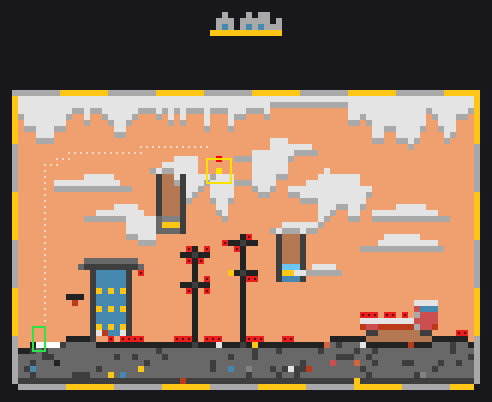
Street RUU · hops 3 · wire 37 · pcs 551
City / Medium / Normal
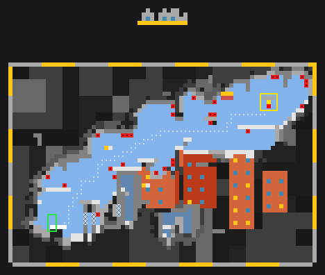
Carved RRUU · hops 3 · wire 28 · pcs 714
City / Medium / Normal
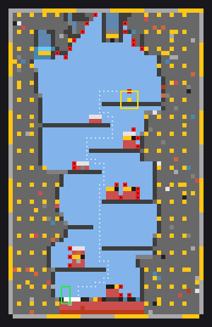
Chimney RUU · hops 5 · wire 29 · pcs 732
City / Medium / Normal
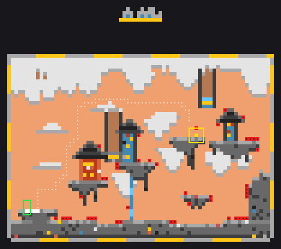
Archipelago RRU · hops 3 · wire 43 · pcs 631
City / Medium / Normal
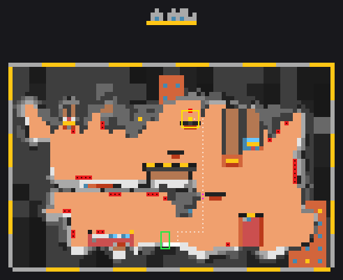
Framed CUU · hops 4 · wire 30 · pcs 686
City / Medium / Normal
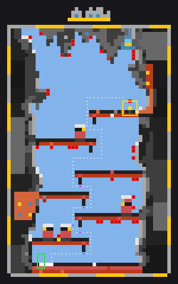
Chimney RRUU · hops 4 · wire 35 · pcs 512
City / Medium / Normal
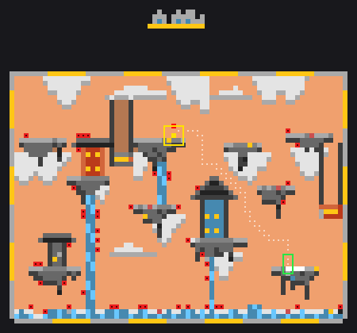
Archipelago LU · hops 4 · wire 47 · pcs 584
City / Medium / Normal
Contact sheet with metrics (sheet-city.png)
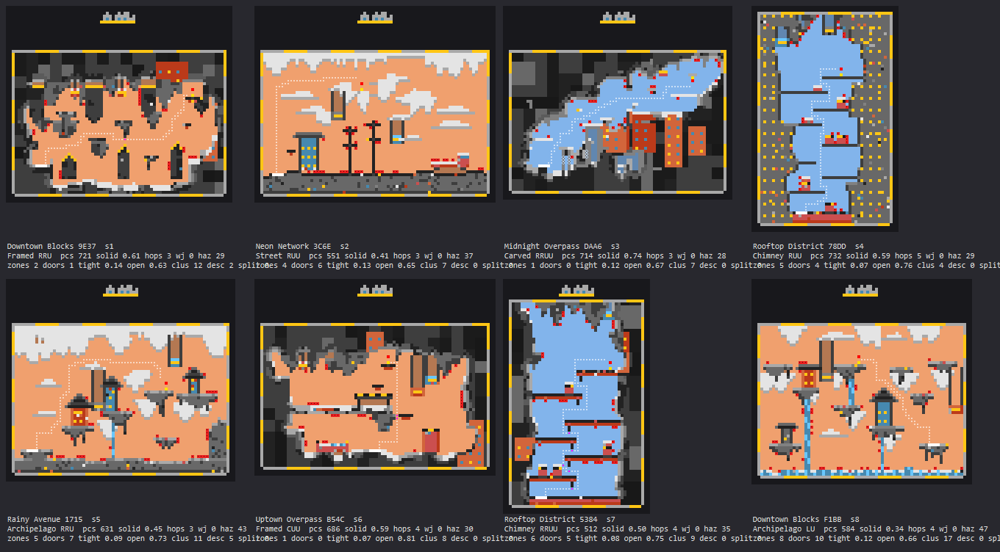
- s2 street with poles, a shop and a car, and s3 with buildings in the cavity are the two that look like a city.
- s4 s7 chimneys: dotted walls again, few crossings. s6 framed hall is mostly empty air.
- Clouds appear on every sky map in every theme; they are generic.
Ruins
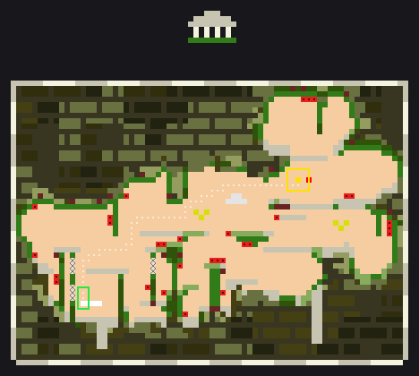
Carved RRU · hops 3 · wire 30 · pcs 910
Ruins / Medium / Normal
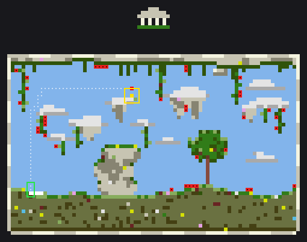
Street RUU · hops 3 · wire 38 · pcs 739
Ruins / Medium / Normal
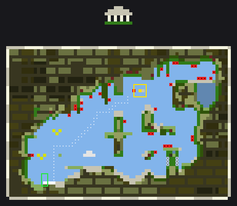
Carved RUU · hops 3 · wire 32 · pcs 849
Ruins / Medium / Normal
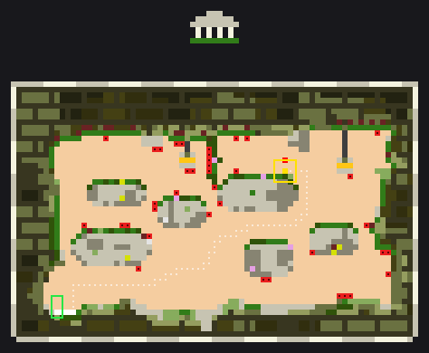
Framed RRUU · hops 3 · wire 38 · pcs 801
Ruins / Medium / Normal
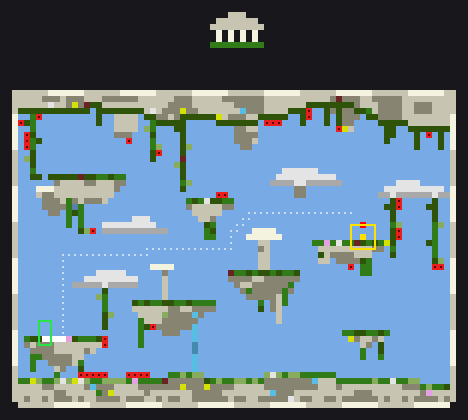
Archipelago RRU · hops 4 · wire 36 · pcs 631
Ruins / Medium / Normal
Carved RRUU · hops 3 · wire 33 · pcs 871
Ruins / Medium / Normal
Ribbon LF · hops 4 · wire 32 · pcs 612
Ruins / Medium / Normal
Archipelago RRUU · hops 5 · wire 34 · pcs 694
Ruins / Medium / Normal
Contact sheet with metrics (sheet-ruins.png)
- Three of eight are blob caves (s1 s3 s6), because ruins carry the highest carved weight. No columns, no arches yet.
- s2 street with a tree and s7 ribbon with pillars are the ones with a temple feel.
Water
Archipelago LU · hops 3 · wire 63 · pcs 591
Water / Medium / Normal
Chimney CUU · hops 5 · wire 29 · pcs 533
Water / Medium / Normal
Street RUU · hops 3 · wire 47 · pcs 504
Water / Medium / Normal
Carved RRU · hops 3 · wire 29 · pcs 676
Water / Medium / Normal
Ribbon LU · hops 4 · wire 57 · pcs 487
Water / Medium / Normal
Archipelago CUU · hops 4 · wire 53 · pcs 484
Water / Medium / Normal
Carved RUU · hops 3 · wire 29 · pcs 819
Water / Medium / Normal
Ribbon LF · hops 4 · wire 65 · pcs 540
Water / Medium / Normal
Contact sheet with metrics (sheet-water.png)
- s5 ribbon hall has a rust-orange background that does not read as water at all.
- Seaweed and coral islands (s1 s6) are fine; s4 s7 are blob caves.
Space
Street LUU · hops 5 · wire 47 · pcs 703
Space / Medium / Normal
Carved RRU · hops 3 · wire 29 · pcs 895
Space / Medium / Normal
Ribbon LU · hops 4 · wire 29 · pcs 540
Space / Medium / Normal
Archipelago LU · hops 4 · wire 49 · pcs 599
Space / Medium / Normal
Framed CU · hops 4 · wire 32 · pcs 770
Space / Medium / Normal
Ribbon RRU · hops 3 · wire 37 · pcs 558
Space / Medium / Normal
Archipelago RU · hops 5 · wire 49 · pcs 638
Space / Medium / Normal
Chimney LUU · hops 5 · wire 41 · pcs 580
Space / Medium / Normal
Contact sheet with metrics (sheet-space.png)
- Stars as stepping stones (s1 s7) and the hull ribbons (s3 s6) work. Snow caps on everything look more like winter than space.
- s2 carved station: a blob with a grid behind it.
Random themes, Large / Hard
Lattice RRU · hops 4 · wire 51 · pcs 760
Forest / Large / Hard
Carved RRUU · hops 5 · wire 28 · pcs 818
Water / Large / Hard
Framed CUU · hops 4 · wire 48 · pcs 570
Cave / Large / Hard
Archipelago CUU · hops 4 · wire 62 · pcs 559
Water / Large / Hard
Contact sheet with metrics (sheet-random-large-hard.png)
Random themes, Small / Easy
Carved RRUU · hops 4 · wire 22 · pcs 593
Forest / Small / Easy
Ribbon RRU · hops 3 · wire 63 · pcs 354
Water / Small / Easy
Chimney LUU · hops 3 · wire 25 · pcs 400
Cave / Small / Easy
Chimney LUU · hops 4 · wire 28 · pcs 418
Water / Small / Easy